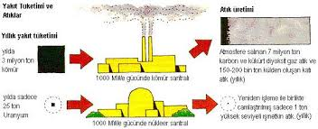

Nükleer santrallerde elektrik enerjisi üretimi, geleneksel termik santrallerde olduğu gibi dolaylı yolla gerçekleşir. Nükleer reaktörde meydana gelen nükleer fisyon süreci, reaktör içindeki soğutucu akışkanı ısıtır. Bu soğutucu, reaktör tipine bağlı olarak su, gaz veya sıvı metal olabilir. Isıtılan soğutucu, buhar üretecine yönlendirilerek burada su buhara dönüştürülür. Elde edilen basınçlı buhar, genellikle çok kademeli bir buhar türbinine gönderilir. Türbinden çıkan düşük basınçlı buhar, bir yoğuşturucuda yoğuşturularak sıvı hâle getirilir. Yoğuşturucu, ikinci bir devreyle çalışan ve genellikle soğutma kulesi ya da doğal bir su kaynağından gelen soğuk suyla ısı alışverişi yapan bir ısı eşleyicisidir. Yoğuşturulan su, yeniden buhar üretecine pompalanır ve çevrim sürdürülür. Bu işlem, Rankine çevrimi olarak adlandırılan termodinamik döngüye karşılık gelir.
